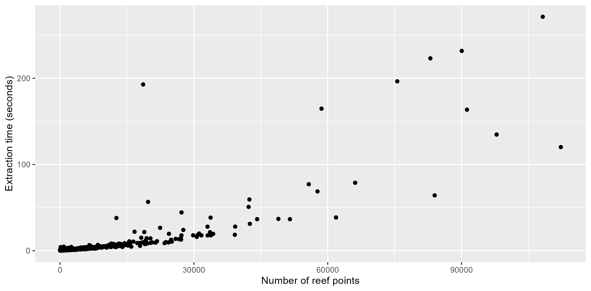
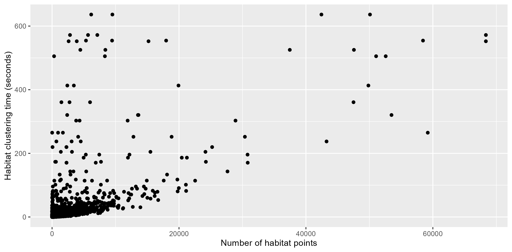
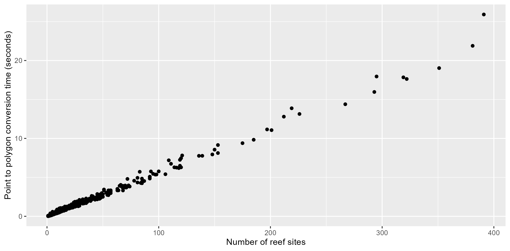
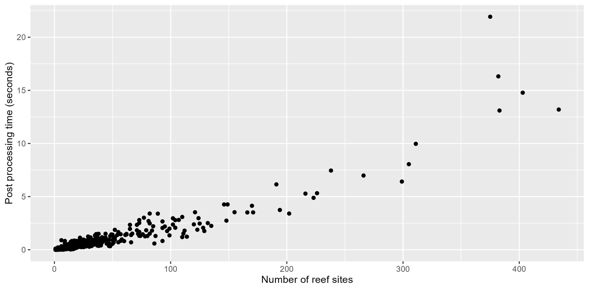

ReefPartitionUniversal workflow steps have been benchmarked using GBRMPA 10m resolution data for the Mackay-Capricorn management area of the Great Barrier Reef, Australia. This includes 827 reefs of varying sizes with valid data. Benchmarking was performed using a raster resolution of 10m and a H3 hexagon resolution of 12 (307.092m2 cell area).
Point extraction
Point extraction was benchmarked for reefs using the H3 cell method extract_point_cells. Point extraction time was recorded once per reef in seconds. The mean extraction time was 5.34 seconds, with a maximum of 271.31 seconds. Extraction time increases with the number of points extracted, reaching 1 minute at between 50-60,000 points.

Point clustering
Point clustering was benchmarked using the fast-skater algorithm with Minimum Spanning Tree (MST) inputs. This used the default arguments of cluster_reef_points. This includes an interpolation threshold where for any habitat with > 30,000 points, a random sample of 30,000 is drawn for clustering with the remaining points being allocated clusters using k nearest neighbour classification. Clustering time was recorded separately for each habitat type (the simplest clustering units) within each reef. Clustering time displays much more variation than extraction time, likely reflecting it’s dependence on the spatial complexity of the habitat points and the MST inputs; as well as the use of a 30,000 point interpolation threshold.

Point to polygon conversion
Point to polygon conversion time was benchmarked for each reef using cells_to_polygons to convert clustered H3 cells into site polygons, recording the number of sites per reef and the time taken in seconds. Conversion time increases linearly with the number of sites on the reef, reaching a maximum of 25.9 seconds.

Post processing
Reef post-processing was performed for each of the resulting polygonised reefs. This step removes sites that are too small or too far away from other polygons within their site ID. Post processing time largely holds a linear relationship with the number of sites on a reef, with a maximum time of 21.92 seconds.
